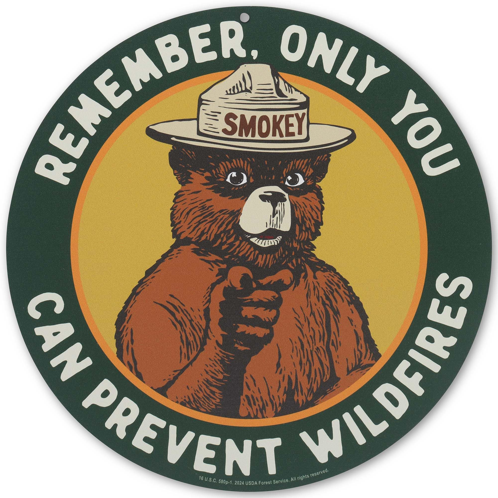

Overview
Deep in the dry pine forests near Capitan, New Mexico, a wildfire roared through Lincoln National Forest in the spring of 1950. Firefighters on the scene discovered a small black bear cub clinging to a charred spruce tree — singed, shaken, and alone. They rescued him, tended his burns, and the newspapers named him Smokey.
It’s a poetic twist of history that the U.S. Forest Service had already introduced a cartoon wildfire-prevention mascot six years earlier. Overnight, the fictional poster character fused with a real surviving bear, and America finally had a face to go with the warning.
The cub was flown to Washington, D.C., where he became a living ambassador at the National Zoo. Letters, drawings, and gifts poured in from children across the country. Smokey wasn’t simply a symbol of fire safety anymore — he became an emblem of resilience.
For decades, his message echoed across posters, radio spots, schoolrooms, and trailheads:

“Only you can prevent forest fires.”
It remains the longest-running public service campaign in American history.
🔥 Changing a Nation’s Habits
Before Smokey, careless campfires, burning brush piles, and tossed matches were part of everyday life in the American West. After Smokey, wildfire prevention became cultural instinct. The image of a ranger-hat-wearing black bear pointing straight into the viewer’s eyes embedded itself into generations of hikers, campers, and families.
His influence helped usher in better rules, safer trails, and a deeper respect for the natural world.
🌲 A Return Home
When Smokey died in 1976, he was brought home to be buried in Capitan — the New Mexico town nearest to the fire that rescued him.
Today, visitors stop by his gravesite not out of novelty, but out of gratitude. He reminds us that the wild lands we travel through are fragile — and that stewardship begins with individuals, not agencies.
🧭 Legacy
Smokey stands as a gentle monument to responsibility, and to the small burned cub who survived long enough to teach America how to care for its forests.